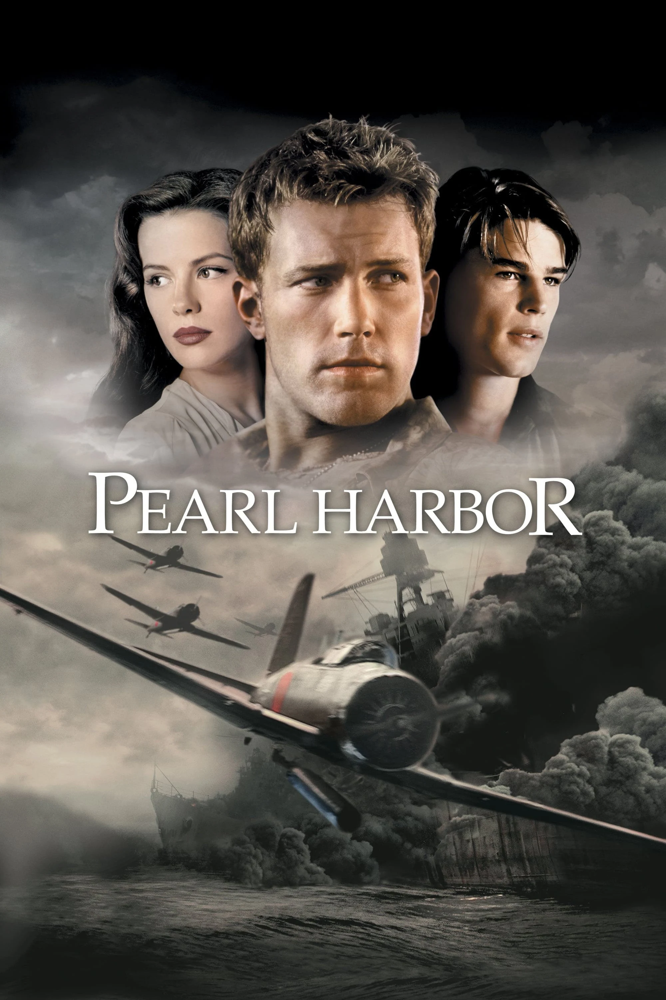

Calificación: 6.1
Año de Publicación: 2001
Sinopsis: Es una película dirigida por Michael Bay que se desarrolla durante los eventos del ataque japonés a la base naval de Pearl Harbor durante la Segunda Guerra Mundial. La trama se centra en la historia de amor entre dos amigos, Rafe McCawley (interpretado por Ben Affleck) y Danny Walker (interpretado por Josh Hartnett), que se ven envueltos en los dramáticos acontecimientos de la guerra..
Actores: Ben Affleck, Josh Harnett, Kate Beckinsale, Alec Baldwin
